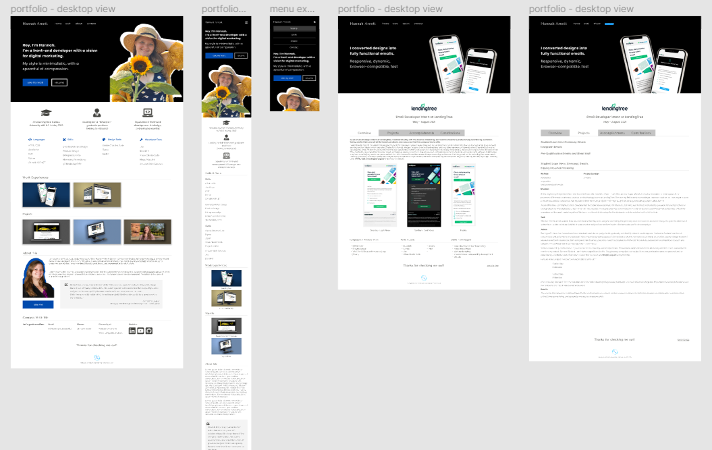

My Portfolio Website Project
Website Designer and Developer
September‐November 2021
My Role
web designer
web developer
graphic designer
Project Duration
3 months
Project Goal
To create my own website portfolio for the purposes of securing employment and documenting my achievements
Overview
With the start of my last year at Purdue University, I needed to have more substantial development experiences under my belt to show off. Designing and developing my own website was an optimal way to showcase my best skills.
This project was an essential learning experience for me. I created my own website- from scratch- completely by myself for the first time. From start to finish, I had many first experiences like using Figma and buying my own domain name. The newness of everything in this project resulted in numerous challenges that I had to overcome. No matter how big or small the problem was, I researched and carefully considered my options. All of the research, advice from professors, and trial-and-errors allowed me to learn so much more about my field and become significantly more confident in my abilities as a professional about to enter the workforce.
Unfortunately, this project was not all success like I was hoping. In the beginning, I set personal goals for myself to determine my own success upon completion. Here are the goals I set for this website:
- Learn how to use Figma to design my website
- Use Figma and Zeplin to help me develop my website
- Learn how to use a framework to develop my website
- Do not use templates
- Add JavaScript functions that enhance the user experience
- Implement high-quality visuals throughout website
- Seek feedback and advice from trusted professionals
I managed to accomplish all of my goals except the second and third bullets on the list.
For the second bullet, I didn’t fully design each page of my website on Figma, and I didn’t use Zeplin either. Instead I used Figma more as design suggestions to visualize my ideas on screen before implementing them into the website itself. I was adding and making revisions directly to my website as I was developing it, so I abandoned the idea of relying on Figma and Zeplin early on. I liked the idea of experimenting with the code itself more than seeing the updates visually on Figma.
For the third bullet, I tried to learn React and implement it into my website, but I realized almost instantly that learning a framework for the first time was not a quick task. I needed this website to be done as soon as possible to begin applying for full-time positions so I had to skip it. I’ve never used a framework before but I know how relevant they are in my field, so I was disappointed that I didn’t have time to learn. On the bright side, I am on the lookout for any opportunities in the future where I can appropriately learn and implement a framework in a project.
Creating my own website was something I had always wanted to do. In the past, I've tried and failed several times, but this time I can proudly say I succeeded. My website is just the first of many digital products I will create in my career, which I look forward to in the years to come!
Languages I Worked With:
HTML/CSS
Tools I Used:
Visual Studio Code
Figma
Photoshop
Illustrator
Github
Netlify
Skills I Developed:
web development
responsive design
strategic web designing
working in Figma
digital marketing